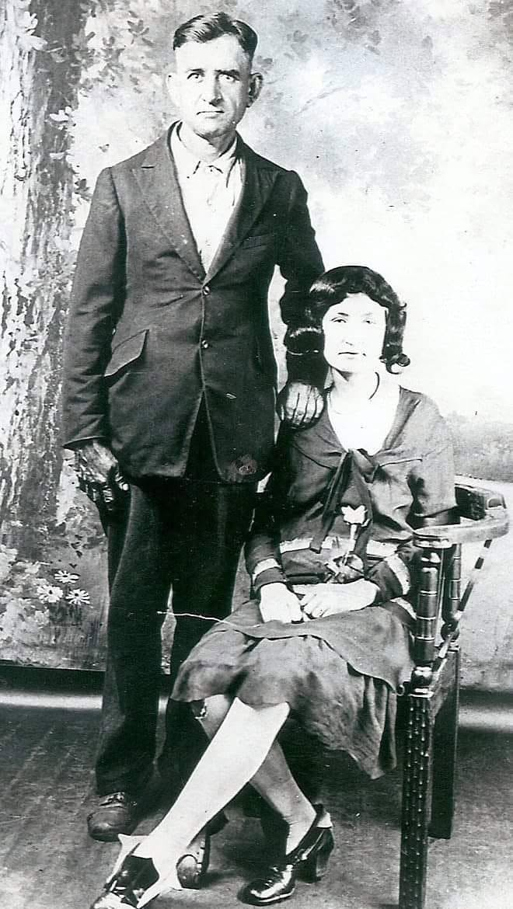

May 1889 – December 1927
The 1900 census lists Mary, age 11 and born May 1889, in the household of James Alexander McKinney and Amanda J. Davis. Her siblings are taken from the existing Geni family group: the original profile distinguishes full and half siblings, but the relationships and several estimated dates require further record review. The two Eugenes and Doc/Dock are retained as separately named individuals because the source tree lists them separately.
Mary’s marriage to William is a family-account date; no marriage record has been located. Homer and Lola are named as their children in the existing profile’s family sources. The marriage and children’s parentage should not be treated as established solely from chronology.
Mary’s death remains unresolved. The family material gives 12 December 1919, 1927, and 1936; no death certificate has been located. The 1927 date was previously used as a working estimate, but the profile now leaves the death date unknown rather than presenting that estimate as fact. Burial at Brewstertown Cemetery is reported, but the inscription for Mary on the shared marker has not been photo-verified.
May 1889 · age 0
Born in Tennessee; the 1900 census in Scott County is the basis for the reported birth month and year
1 April 1900 · age 10
Enumerated in her parents’ household in Scott County, Tennessee
1905 · age 15–16
Married William Alexander Brewster in Fentress County, Tennessee
31 August 1911 · age 22
Son Homer William Brewster Sr. born
8 May 1914 · age 24–25
Daughter Lola Edna Brewster born in Brewstertown, Morgan County, Tennessee
1919 / 1927 / 1936
Conflicting reported death years appear in the research. A 12 December 1927 date is one working claim, not an established death date; no timeline entry treats it as proven
Mary Ellen McKinney was born in May 1889 in Tennessee, the daughter of James Alexander McKinney and Amanda J. Davis. The 1900 census in Scott County, Tennessee, lists Mary, eleven years old, born in May 1889, in their household. Her childhood was spent in a large blended family — her father's children across two marriages.
Mary Ellen and William Alexander Brewster married on 21 October 1905 in Fentress County, Tennessee. No marriage record has been located.
Their son Homer William Brewster Sr. was born on 31 August 1911. That Mary Ellen was Homer's mother is settled: Cleo R. Brewster, William's daughter and Homer's sister, was adamant about it, and the records agree — Homer was born inside William and Mary Ellen's marriage. Their daughter Lola Edna was born on 8 May 1914 in Brewstertown; an Ancestry index names William and Mary Ellen as her parents. She died on 17 April 1968 in Cincinnati and married into the Sears family.
Mary Ellen's death date is not settled. The family's own accounts give three dates — 12 December 1919, 1927, and 1936 — and no death certificate has been found. The 1927 date is the working date: it is the only one that fits "at age thirty-eight" against her verified May 1889 birth, and Find a Grave, Geni, and WikiTree all carry circa 12 December 1927 as uncertain.
Grades: an original record says it · several records point to it · the family's own telling · a lead, not proved.
Profile history: Created 4 November 2026 from the family couple profile and research notes.